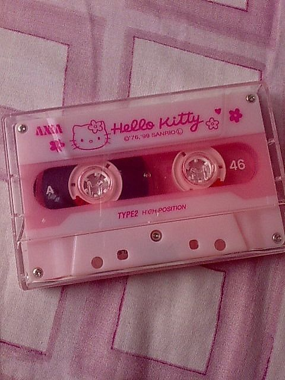
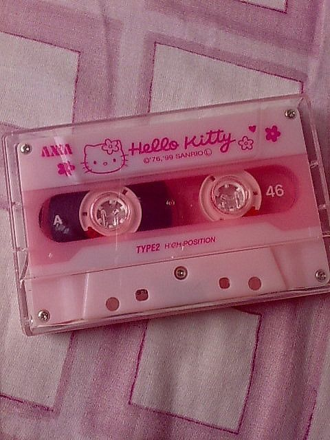

"Like Tomboys and Hate Girlie Girls? That’s Sexist"
We need to stop maligning femininity, in both girls and boys.
we must strip gendered associations from lipstick, dresses and glitter, soccer balls, sweatpants and short hair
 


we have internalized a kind of sexism that values masculinity in both boys and girls, just as it devalues femininity in them
being ultra feminine does not equate to less intelligence or strength